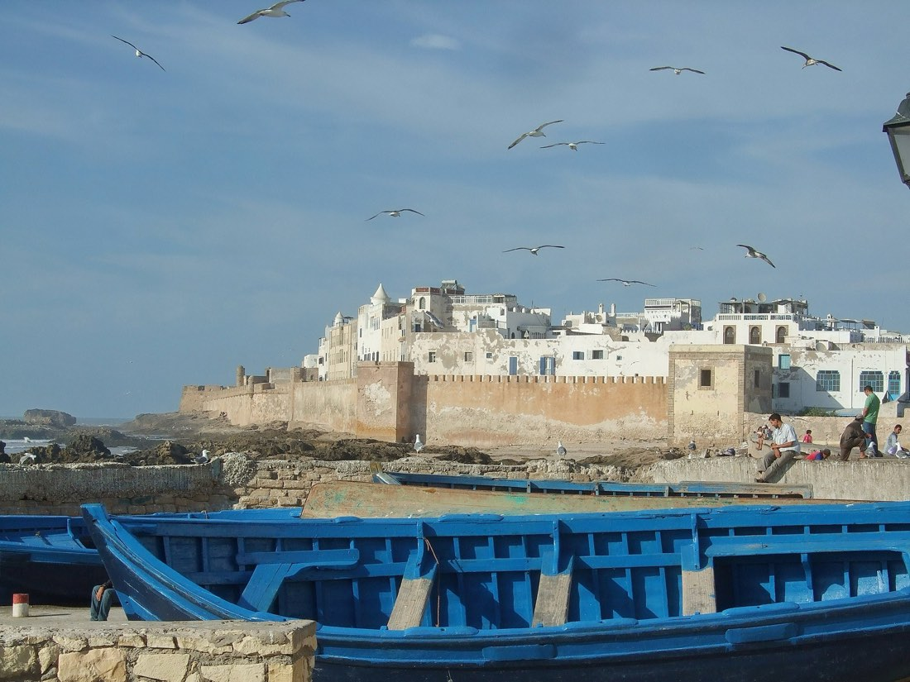
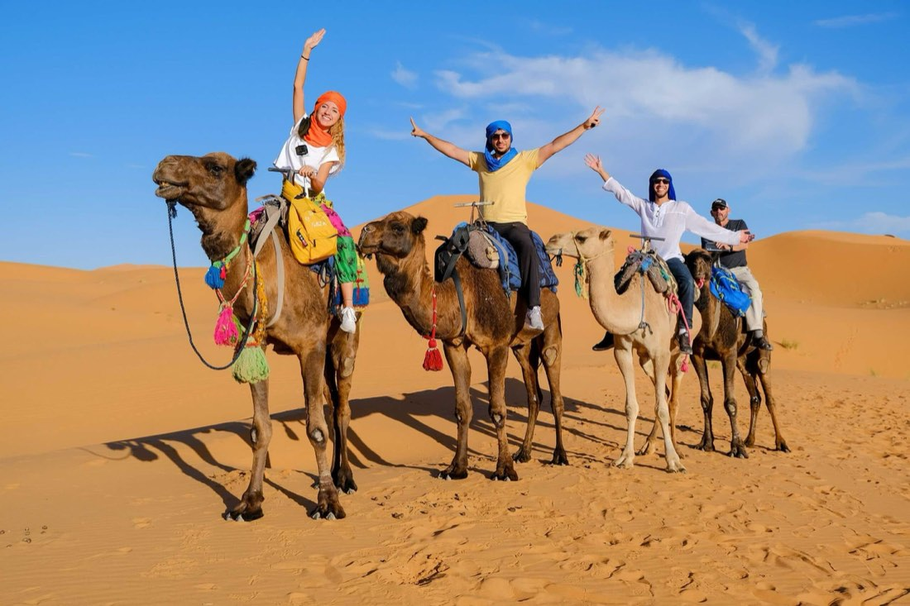
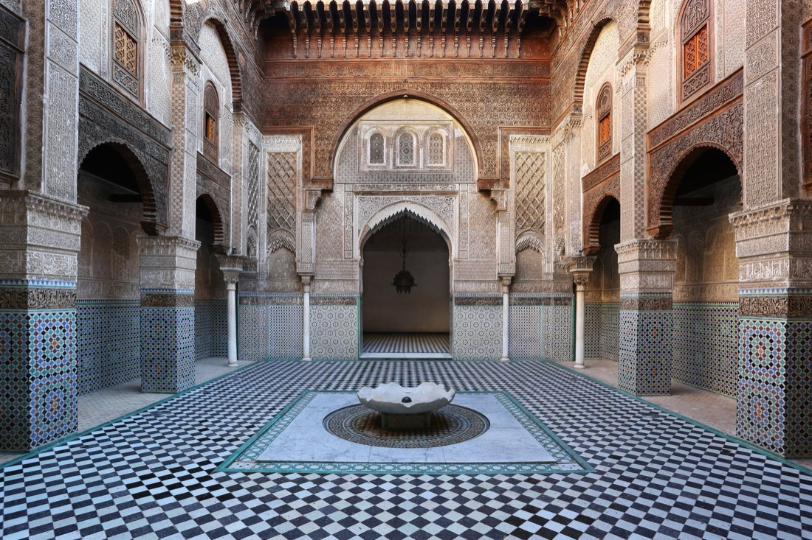

FasGüncel
FasGüncelEndülüs Turu
Fas, Kazablanka, Marakeş, Rabat, Tanca, İspanya, Tarifa, İşbiliyye (Sevilla), Kurtuba, Cordoba, Gırnata (Granada), Malaga
Güncel tarih ve fiyatiçin arayın
İncele →
Şehir etiketine dokunun; programın o günü açılsın.
Aşağıdaki fiyatlar önceki dönem içindir. Güncel fiyat, tarih ve kontenjan için bizi arayın.
| Tek Kişilik Odada Kişi Başı | €965 |
|---|---|
| İki Kişilik Odada Kişi Başı | €860 |
| Üç Kişilik Odada Kişi Başı | €860 |
| 0 - 2 Yaş | €210 |
|---|---|
| 2 - 6 Yaş | €682,50 |
| 6 - 12 Yaş | €682,50 |
* 12 yaş dahil değildir.
* 0 - 6 yaş çocuk fiyatları yataksızdır.
İstanbul Yeni Havalimanı Dış Hatlar Terminali Giden Yolcu Salonu "THY" bankosunda 09h00’da buluşuyoruz Türk havayollularına ait sefer ile saat 12h05`te Marakeş’e hareket.Menara Havalimanına varışımıza istinaden. Türk rehberimiz tarafınca karşılama ve Kızıl şehir Marakeş hotelimize hareket, serbest akşam yemeği ve geceleme otelimizdedir.
İkinci gün Marakeş'te, bu büyülü şehrin tarih ve kültür hazinelerini keşfetme fırsatı sunuyor. Arzu eden misafirler için rehberimiz tarafından düzenlenen ekstra Marakeş şehir turu ile günü başlatıyoruz. Bu tur, şehrin simgelerini yakından tanıma şansı vererek unutulmaz anılar biriktirmemize olanak sağlıyor.İlk durağımız, Marakeş'in siluetini süsleyen muazzam Kutubiya Camii olacak. 12. yüzyılda inşa edilen bu anıtsal camii, Fas'ın en büyük minaresine sahip ve İslam sanatının büyüleyici örneklerinden biri olarak kabul ediliyor. Rehberimiz eşliğinde camiinin tarihi ve mimari detayları hakkında bilgi alacak, fotoğraflar çekecek ve Marakeş'in manzarasını en iyi açıdan gözlemleme fırsatı bulacağız. Sonrasında Bahia Sarayı'nı ziyaret edeceğiz. 19. yüzyılda inşa edilen bu saray, Fas mimarisinin inceliklerini yansıtarak ziyaretçilere geçmişe bir yolculuk sunuyor. Sarayın ihtişamlı odalarında dolaşırken, dönemindeki aristokrat yaşamına dair bir hisse kapılacaksınız. Sonraki rotamız, Menara Bahçeleri'ne doğru ilerliyor. Bu güzel bahçeler, zeytin ağaçları ve büyük bir su havuzuyla çevrili olarak huzurlu bir atmosfer sunuyor. Burada rehberimizden bahçenin tarihini ve özelliklerini öğrenerek dinlendirici bir mola geçireceğiz. Sonraki durağımız Marakeş'in geleneksel berberi eczanesinde özgün argan ve argan yağı ürünlerini keşfedip, doğal krem ve merhemleri deneyerek Fas'ın eşsiz güzellik sırlarını keşfedicez. Öğle yemeği sonrasında serbest zamanımız başlıyor. Marakeş çarşısını keşfetmek ve alışveriş yapmak isteyenler için ideal bir fırsat. Çarşı, renkli tezgahlar, yerel el sanatları, geleneksel tekstil ürünleri ve özgün hediyeliklerle dolup taşıyor. Burada geçireceğiniz zaman, Fas'ın zengin el sanatları geleneğini yakından gözlemlemenize olanak tanıyacak.Günün kapanışını ise UNESCO Milli Mirasları arasında yer alan Jemaa El Fna Meydanı'nda yapıyoruz. Bu meydan, Marakeş'in kalbinde bulunan bir açık hava tiyatrosu gibidir. Meddahlar, müzisyenler, satıcılar ve diğer göstericilerle dolu olan meydan, Fas kültürünün canlı bir yansımasıdır. Rehberimiz, meydanın geçmişi ve bugünü hakkında bilgi vererek bu benzersiz atmosferi daha iyi anlamanıza yardımcı olacaktır. Günün sonunda otelimize dönerek geceyi Marakeş'in büyüleyici atmosferine uyum sağlayarak tamamlıyoruz. Akşam yemeği ve folklorik dans gösterisi izleme opsiyonunu değerlendirmek isteyenler için unutulmaz bir seçenek sunuluyor. Bu özel deneyim, Fas geleneksel dansları ve müziği ile unutulmaz bir gece yaşamanıza olanak tanıyacak, Chez Ali Show`u izleme imkânı (70 USD). Geceleme Marakeş`deki otelimizde.
Üçüncü gün, arzu eden misafirlerimiz için düzenlenen ekstra Essaouira turu (80 USD), gününüzü unutulmaz kılacak bir seçenek sunuyor. Sabahın erken saatlerinde otelimizde alacağımız keyifli kahvaltının ardından Marakeş'in büyüleyici atmosferinden ayrılarak, Atlas Okyanusu'nun kıyısındaki tarihi ve romantik şehir Essaouira'ya bir yolculukla başlıyor. Yol boyunca, Fas'ın muazzam manzaralarının keyfini çıkarabilir, güzergah üzerindeki doğal güzellikleri gözlemleyebilirsiniz.Tur kapsamında Essaouira'nın tarihi ve kültürel zenginliklerini keşfedecek, şehrin eşsiz atmosferine tanıklık edeceksiniz. Bu seçenek, turistik noktaları rehber eşliğinde gezme, geleneksel el sanatlarını yakından inceleme ve şehrin tarihine dair keyifli bilgiler edinme imkanı sağlayacaktır.Essaouira, eski bir Portekiz limanı olarak bilinir ve mimarisi ile farklı kültürlerin izlerini taşır. Hıristiyan, Musevi ve Müslüman etkileşiminin birleşim noktası olan bu şehir, dar sokakları, tarihi yapıları ve etkileyici limanı ile büyüleyici bir atmosfere sahiptir. Atlantik'in serin esintisiyle tanınan Essaouira, aynı zamanda sahilindeki uzun kumsalıyla da ünlüdür.Tur sonrasında öğle yemeği için serbest zamanınız olacak. Essaouira'nın deniz ürünleriyle ünlü restoranlarında lezzetli bir öğle yemeği yiyebilir ve Atlantik'in taze esintisi altında keyifli bir mola verebilirsiniz.Öğle sonrasında serbest zamanın ardından Marakeş'e dönüş için hareket ediyoruz. Marakeş'e varışımızın ardından otelimize dönüyoruz.Serbest akşam yemeği için otelinizde rahatlayabilir veya Marakeş'in hareketli atmosferinde şehir turu yapabilirsiniz. Marakeş'in gece yaşamı ve sokaklarındaki canlılık, akşam saatlerinde başka bir büyüme dönüşüyor. Günün yorgunluğunu atmak ve Fas'ın geceleyin sunduğu benzersiz atmosferi yaşamak için bu serbest zamanı değerlendirebilirsiniz. Geceleme otelimizde.
Dördüncü gün, arzu eden misafirlerimiz için düzenlenen ekstra Marakeş turu (80 USD) Otelimizde alacağımız nefis kahvaltı ile birlikte, Marakeş'in benzersiz güzelliklerini keşfetmek üzere heyecan dolu bir gün başlıyor. Marakeş şehir turumuz, Fas'ın kültürel başkentindeki tarihi ve modern cazibesini bir araya getirerek unutulmaz bir deneyim sunuyor.Turumuzun ilk durağı, Marakeş'in simgelerinden biri haline gelmiş olan Majorelle Bahçesi. Fransız ressam Jacques Majorelle tarafından tasarlanan bu bahçe, renkli bitki örtüsü, egzotik bitkiler ve özenle düzenlenmiş peyzajıyla ziyaretçilerini büyülüyor. Bahçede yürüyüş yaparken, göz alıcı mavi tonlardaki binalar, çeşitli bitki türleri ve zengin doğa ile çevrili atmosferin keyfini çıkaracaksınız. Yves Saint Laurent'un bu bahçeye olan ilgisi, bahçenin adının Majorelle Bahçesi olarak kalmasına ve zamanla dünya çapında ün kazanmasına neden oldu.Majorelle Bahçesi'nin büyüsünden sonra, Marakeş'in ünlü çarşısı olan Jemaa El Fna Meydanı'na doğru yol alıyoruz. Bu serbest zamanda, Marakeş'in sokaklarında dolaşabilir, yerel tatları deneyebilir ve geleneksel el işi ürünlerini keşfetme şansınız olacak. Alışveriş keyfinin ardından, havalimanına transferimizi gerçekleştiriyoruz.Gecenin ilerleyen saatlerinde, İstanbul'a dönüş uçuğumuzla birlikte turumuz sona eriyor. Bu unutulmaz Marakeş serüveninde bir araya geldiğimiz için mutluluk duyuyoruz. Fas'ın renkli kültürü, tarihi dokusu ve sıcak insanlarıyla geçen bu günler, yaşamınıza unutulmaz bir dokunuş bırakacak. Marakeş'in sokaklarından Jemaa El Fna Meydanı'na, Majorelle Bahçesi'nden Marakeş çarşısına kadar her anı, sizi Fas'ın büyüsüne davet ediyor. Bir sonraki seyahatinizde buluşmak üzere, hoşça kalın!
Her anın değerli olduğu bu seyahatte, unutulmaz anılar biriktireceğinize emin olabilirsiniz. Yolculuğunuz boyunca rüya gibi anlar yaşamanız dileğiyle...
Rehberimiz acentamızın onayı ile programda değişiklik yapma ve hava durumuna ve/veya mücbir sebebe bağlı olarak gezi noktalarında bulunan bazı yerleri iptal etme hakkına sahiptir. Turumuza katılan tüm misafirlerimiz bunu kabul etmiş sayılır.
FasGüncel
FasGüncel
FasGüncel